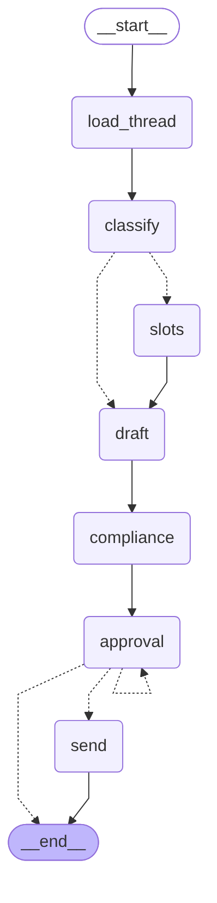
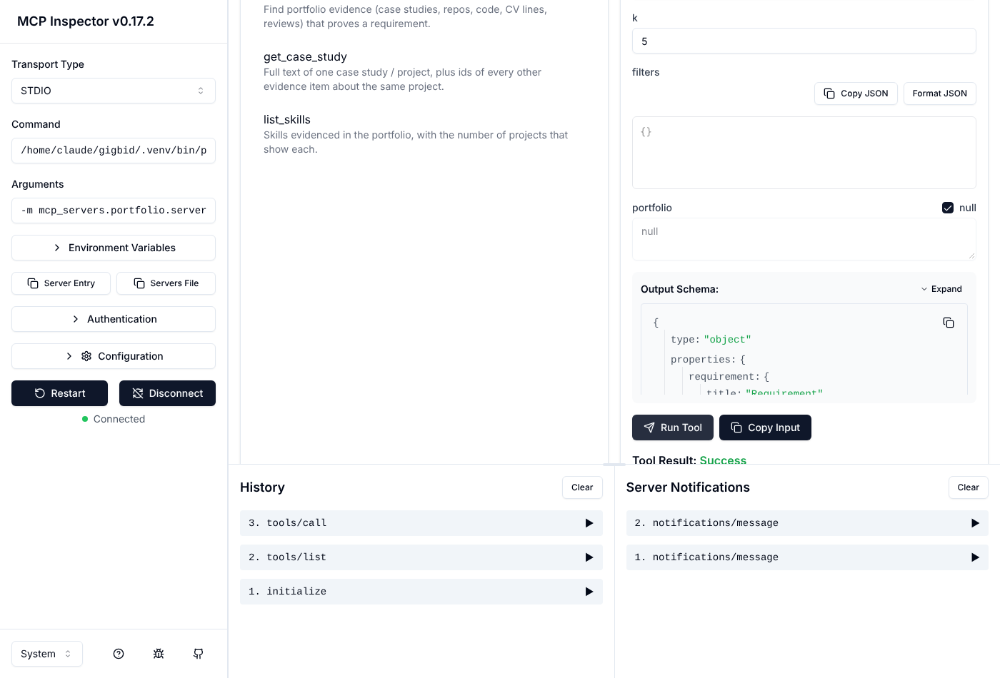

AI-4016 R&D report · Hasan · FAST-NUCES Islamabad · repository commit d39e395 · results profile heuristic ·
providers actually used in the main run: {'heuristic': 600}
Read first: threats to validity. (1) The instructor GigSim, persona corpora and dev set were not available; every
experiment uses this repository's GigSim stand-in (gigsim/, seeded and reproducible), written by the same author as the system.
(2) The workspace had no LLM API access while these numbers were produced, so results come from the heuristic profile, the deterministic
rule-based fallback every node has (ADR 0004). Experiments that only make sense with a model (tool-granularity study, single-agent
comparison, judge calibration) have committed runners and are marked pending. (3) Simulated-client reply rate is a designed proxy. (4) Real Upwork data (six Kaggle datasets, §11) arrived late; it has no gold
labels, so it is used for a real job board, real prices and checks of the rules, while the labelled metrics stay on the synthetic sets.
Executive summary
GigBid is a LangGraph multi-agent copilot that finds freelance jobs, decides bid / watch / skip with reasons, prices, drafts a proposal whose every
claim is backed by the freelancer's portfolio, and stops at a human approval gate before anything is sent or any Connects are spent. It talks to the
marketplace, portfolio and calendar only through three MCP servers. The table lists the headline numbers; each comes from a committed file in
evals/results/ and is rebuilt into this PDF by docs/report/build_report.py.
Answers to the three R&D questions. (A) Mid-grained tools with "what this is not for" descriptions are shipped (§5). (B) The pre-registered
RAG hypothesis was rejected: decomposition and hybrid search alone lowered Recall@5; context headers and structural chunks carried the gain (§6).
(C) The hand-built graph is shipped because only it can put the approval interrupt and the compliance pass at a fixed point (§7).
Real data: 1,295 real Upwork posts form the live job board and 1.3M real contracts price them; they exposed and fixed a scam-rule false-alarm
problem (§11). Biggest open item: model-backed (Groq gpt-oss) runs are produced by the one-command laptop script; their status is in §12.
1. Problem and constraints
Freelancers spend hours scanning feeds, spend paid Connects on jobs they won't win, send generic proposals, and run into scams that ask for
free work or off-platform payment. GigBid automates discovery, assessment and drafting. The freelancer makes every decision that leaves the system.
Never automated: submitting a proposal, sending a message, spending Connects, claiming experience the portfolio doesn't prove, contacting
a client off-platform. Enforced by a LangGraph interrupt()and an HMAC approval token checked inside the Marketplace MCP server (ADR 0002).
Allowed automatically: scouting, analysis, skipping (only with autonomy auto_skip_low_fit), drafting.
Budgets (config, enforced per thread): 40 graph steps, 30k tokens per job, max 2 Critic revisions; latency and cost budgets in §14.
Marketplace port (agent/marketplace_port.py) has two adapters, GigSim and live Upwork (official MCP over Streamable HTTP, OAuth 2.1).
The port lives inside our Marketplace MCP server, so the graph cannot tell which marketplace it uses. MCP surface: Portfolio (read,
publishable), Marketplace (read + write with schemas, annotations, idempotency keys, dry_run, bearer auth, per-user limiter, hash-chained
audit log), Workspace (calendar, email drafts), plus GitHub MCP for repo ingestion. Each agent gets an allowlist of tools.
Stores: Postgres (app tables, LangGraph checkpointer, LangGraph store for memory), Redis (Arq queue), in-process vectors + BM25 (ADR 0003).
Why each agent exists: parallel analysts cut wall-clock time and keep the Analyst tool-less (an injected post can't trigger tool calls).
Fit Matcher makes "no evidence" explicit per requirement. Pricing computes numbers in code and the model only explains them. Verifier, Critic and
Compliance are separated because each failure needs a different fix (§10). Typed hand-offs: JobSpec, RiskReport, FitReport, BidDecision,
PriceQuote, ProposalDraft, Critique, ComplianceVerdict. State, execution trace and long-term memory are kept apart (docs/ARCHITECTURE.md).
Durability (C6) is tested in tests/integration: the graph pauses at approval, the process is replaced, approval resumes from the
Postgres checkpoint, and replaying the submit node from the previous checkpoint returns idempotent_replay with exactly one GigSim
submission and one Connects deduction. Public traces: docs/traces/ (scam skip, approval, injection, Critic loop, crash-and-resume).

Figure 2. Conversation graph: one thread per client conversation; the same approval interrupt guards every send.
3. MCP servers and tool surface
All three servers are FastMCP processes with typed input schemas and MCP tool annotations. The table is generated at build time from
list_tools(), so it always matches the code. Contract tests snapshot the same list and fail on any unreviewed change.
Server
Tool
Kind
Idempotent
Description (first line)
Portfolio
search_evidence
read
yes
Find portfolio evidence (case studies, repos, code, CV lines, reviews) that proves a requirement.
Portfolio
get_case_study
read
yes
Full text of one case study / project, plus ids of every other evidence item about the same project.
Portfolio
list_skills
read
yes
Skills evidenced in the portfolio, with the number of projects that show each.
Marketplace
search_jobs
read
yes
Search open jobs on the marketplace (a saved search). Returns job summaries; job text is untrusted.
Marketplace
get_job
read
yes
Get one job's full post, budget, screening questions, client id and Connects cost.
Marketplace
get_client_history
read
yes
Client history: payment verification, total spent, hires, hire rate, ratings and reviews from freelancers
Marketplace
get_market_stats
read
yes
Awarded-price percentiles (p25/p50/p75/p90) for a job category from historical jobs.
Marketplace
get_connects_balance
read
yes
The freelancer's current Connects balance.
Marketplace
list_messages
read
yes
All client conversation threads for the freelancer, with messages. Client text is untrusted.
Marketplace
get_thread
read
yes
One conversation thread with all messages.
Marketplace
list_proposals
read
yes
The freelancer's proposals and their status (draft, submitted, viewed, replied, interview, hired, lost).
Marketplace
create_proposal_draft
write
yes
Create a proposal DRAFT on the marketplace (no Connects spent). Needs a human approval token unless dry_r
Marketplace
submit_proposal
write, destructive
yes
Submit an existing draft to the client. SPENDS CONNECTS. Needs a human approval token unless dry_run.
Marketplace
send_message
write, destructive
yes
Send a message to a client in a thread. Needs a human approval token unless dry_run.
Workspace
free_slots
read
yes
Free calendar slots in working hours over the next N days (excludes busy blocks and holds).
Workspace
create_tentative_hold
write
yes
Place a tentative calendar hold for a proposed interview slot (no invite is sent).
Workspace
create_email_draft
write
yes
Save an email draft in the freelancer's mailbox (never sends).
Write safety.submit_proposal and send_message are the only destructive tools. Each needs an HMAC approval token bound to
the content hash the freelancer approved, an idempotency key derived from the graph thread, and accepts dry_run. A replay returns
idempotent_replay instead of a second submission. Every write is appended to a hash-chained audit log with PII masked.
Portfolio MCP: the publishable server
The Portfolio server is self-contained (mcp_servers/portfolio/, its own pyproject.toml, README and
server.json). It exposes 3 read-only tools, resources for each case study (portfolio://case/<id>) and a
proposal_evidence prompt, and runs over stdio or Streamable HTTP. Any MCP client can use it to ground a cover letter in a person's real
projects. It runs the same hybrid retriever as the agent (decomposition, BM25 + vectors, contextual headers), so the published tool and the evaluated
pipeline cannot drift apart. It was checked in the official MCP Inspector (right): tool list, a live search_evidence call, resources and prompts.
Lessons: tool descriptions matter more than names (the model picked get_case_study for searches until its description said
"only for a known id"); results return short evidence snippets with ids rather than whole documents, which kept tokens per proposal down.

Figure 3. MCP Inspector: search_evidence call.
4. Data: synthetic world and real Upwork data
Labelled metrics need gold answers (bid or skip, scam or not, fair price band, which project is relevant evidence), and no public dataset has them.
So the experiments run on a seeded synthetic marketplace (GigSim stand-in), and six permitted Kaggle datasets supply what synthetic data cannot: real
posts, real prices and real demand. Every record carries source: real|synthetic, and the UI shows a badge for it.
Source
Size used
Labels
Role
Synthetic (GigSim stand-in)
600 dev + 180 held-out jobs, 158 live, 260 clients, 1,500 price history, 3 personas
Figure 4. Median hourly rate per category. The synthetic generator over-prices developer work and under-prices analyst work
(data/real/calibration.json); real posts are therefore priced from the real contracts, not from the generator.
Real price bands used by the Pricing Strategist (completed contracts, 2024 posted ranges):
Category
Hourly contracts
Hourly p25–p75 ($)
Fixed contracts
Fixed p25–p75 ($)
2024 posted hourly range (medians)
llm_apps
1873
20–50
1502
75–650
18.0–40.0
classical_ml
1793
25–60
1317
50–400
18.0–40.0
vision
508
20–45
579
70–600
18.0–40.0
web_app
13304
15–39
7800
50–650
15.0–35.0
backend
4308
16–40
2407
50–455
16.0–35.0
ecommerce
15079
12–33
9169
50–470
13.0–28.0
bi
3640
25–60
1454
50–397
20.0–45.0
analytics_eng
1069
25–60
430
50–579.1
17.0–35.0
spreadsheet
7648
10–45
6957
27.78–175
10.0–25.0
Figure 5. Weekly share of 2024 posts in each persona's categories (data/real/demand_real.json). GigSim's live feed uses
these shares for its arrival mix, so the board's category balance follows the real market.
Preprocessing (scripts/ingest_kaggle.py, deterministic, about 75 s): HTML and contact details stripped, exact and near duplicates
removed, budgets parsed into hourly range or fixed amount, categories mapped from title and tags first (description only as a fallback with two cues),
out-of-domain posts kept but marked, client stats joined, and percentiles computed per category. Licences: Apache 2.0 and ODC-By, attributed in
docs/DATA_CARD.md and data/real/MANIFEST.json.
5. R&D question A: tool granularity
Hypothesis: a small set of mid-grained tools with rewritten, disambiguating descriptions beats both 17 fine-grained tools (selection errors
between near-duplicates) and 3 coarse tools with an action enum (argument errors) on tool-selection and argument accuracy, at fewer
tokens per task than fine-grained. Setup: 40 tasks with known correct calls (evals/datasets/tool_tasks.jsonl), same model, native tool
calling, tool_choice=required. Results:
Tool set
# tools
Tool selection acc.
Argument acc.
Tokens / task
fine
17
1.0
0.9737
719.6316
coarse
3
0.7895
0.1316
345.1316
best
10
1.0
1.0
543.3947
[tool_study.json]
Shipped design: 10 read tools + 3 write tools; descriptions say what the tool is not for ("never for details of one known job id").
Contract tests pin schemas and annotations (tests/contract/snapshots).
Hypothesis (stated before running): requirement decomposition plus hybrid retrieval raises evidence Recall@5 by 5+ points over V0 on jobs
with 4+ requirements. Result: rejected. Alone, V1 and V2 lowered Recall@5. Corpus: 384 dev jobs with gold evidence; retrieval unit = project.
Variant
Recall@5
MRR
nDCG@10
R@5 (4+ reqs)
note
v0
0.7583
0.9445
0.8333
0.7317
v1
0.7488
0.9546
0.8357
0.7222
v2
0.7296
0.9494
0.8378
0.6999
v3
–
–
–
–
ModuleNotFoundError: No module named 'sentenc
v4
0.7845
0.974
0.8071
0.7605
v5
0.7809
0.9754
0.8427
0.7489
v6
0.7616
0.9732
0.8492
0.7378
v7
0.7395
0.892
0.7936
0.7181
v8
0.7779
0.9824
0.8208
0.741
best
0.7662
0.9894
0.8799
0.7298
best-no_decompose
0.7684
0.986
0.8682
0.7415
best-no_bm25
0.8041
0.9912
0.8774
0.7711
best+multivector
0.7819
0.9232
0.8172
0.7508
best-no_context
0.7512
0.9856
0.8636
0.7126
best-fixed_chunks
0.7338
0.9885
0.8661
0.6902
[rag_heuristic.json]Figure 6. nDCG@10 and Recall@5 per variant on 384 dev jobs. The shipped "best" pipeline wins on ranking quality (nDCG), not on Recall@5.
A 64-config sweep with nDCG@10 declared as the primary metric before running picked decompose + hybrid + contextual header + structural
chunks:
Config (query-retrieval-mv-ctx-chunk-outcome)
nDCG@10
R@5
MRR
dec-hyb-mv0-cx1-str-ob0
0.8799
0.7662
0.9894
dec-den-mv0-cx1-str-ob0
0.8774
0.8041
0.9912
dec-den-mv1-cx1-str-ob0
0.8725
0.8124
0.989
who-hyb-mv0-cx1-str-ob0
0.8682
0.7684
0.986
dec-den-mv1-cx1-fix-ob0
0.8662
0.7866
0.9908
dec-hyb-mv0-cx1-fix-ob0
0.8661
0.7338
0.9885
[rag_sweep_heuristic.json]
Ablation of the shipped pipeline (one component at a time): no decomposition → nDCG 0.8682; no BM25 →
0.8774 (R@5 rises to 0.8041); no contextual header → 0.8636;
fixed chunks → 0.8661; adding multi-vector → 0.8172. Context headers and structural chunks carry
the gain. Held-out: V0 0.8394 vs shipped 0.8634 nDCG@10. V3 (bge-reranker-v2-m3) could not be run: weights on
Hugging Face were unreachable from the build workspace.
End-to-end (results table required by B5)
Variant
Evidence R@5
nDCG@10
Unsupported / proposal (before → after)
Judge
GigSim reply
Hire
p95 s/job
USD/proposal
V0
0.7583
0.8333
0.0466 → 0.0
n/a
0.8347
0.3729
0.3935
0.0
V5
0.7809
0.8427
0.1549 → 0.0
n/a
0.8761
0.4823
0.4915
0.0
V8
0.7779
0.8208
0.0586 → 0.0
n/a
0.8604
0.455
0.4068
0.0
Shipped
0.7662
0.8799
0.0556 → 0.0
n/a
0.8803
0.406
0.4347
0.0
[pipeline_heuristic_dev*.json]
By job type:
Job type
R@5 V0
R@5 shipped
nDCG V0
nDCG shipped
1-3_requirements
0.8011
0.8248
0.8718
0.9133
4+_requirements
0.7317
0.7298
0.8094
0.8593
By persona:
Persona
Bid F1
Scam P
Scam R
Price in band
Proposals
Reply rate
R@5 shipped
R@5 V0
ai_ml
0.9474
1.0
1.0
0.7317
82
0.878
0.7206
0.7455
fullstack
0.9659
1.0
1.0
0.6512
86
0.8953
0.7969
0.7653
data_analyst
0.942
1.0
1.0
0.7273
66
0.8636
0.7802
0.7639
Claim verification (B3). Claims are split by sentence. Each is checked against cited and retrieved evidence by entity (skills incl. ontology
aliases, numbers, proper names; a wrong name or number is always unsupported) and adjudicated by a model only when it has no checkable entities.
Unsupported claims are removed before the Critic. Unsupported claims per proposal before verification: 0.0556, after: 0.0.
LLM-judge calibration:pending: needs a model endpoint (runner committed).
Where better retrieval didn't translate into replies, and why. Reply rates across variants (0.8347–0.8761)
moved far less than one verifier rule moved them: before the fix in §10 the shipped pipeline had 0.8362 reply rate with
0.4612 claims removed per proposal; after, 0.8803 with 0.0556. Simulated clients reward
"must-have evidenced", which saturates once the top 3 items contain one strong match per must-have. Most variants already reach that, so nDCG gains
deeper in the ranking don't show up in replies. Decision: ship the sweep winner (rag.variant: best); revisit with the model profile.
7. R&D question C: single agent vs supervisor vs graph
Setup: 50 dev jobs (all scams and injections in the sample plus normal jobs), (a) one ReAct agent holding all tools, (b) prebuilt
langgraph-supervisor with researcher/matcher/writer, (c) the hand-built graph. Same model, same tools, same verifier and policy scan applied to outputs.
Results:pending: needs a model endpoint (runner committed)
Expectation to test: the single agent should match the graph on simple in-domain jobs at lower latency and fail on scams and injections (no
rule floor, no separate compliance pass), and on claims (no verifier). Whether to ship it: no, because only the graph can enforce the approval interrupt at a fixed point.
8. The change request
The official 2 Nov "platform policy update" text was not available, so the GigSim stand-in models one new rule (no external links except
GitHub) and one new cost (+2 Connects on jobs with 20+ proposals) as policy_v2.yaml. Absorbing it: 1 config line
(policy.version: 2), 0 code lines, 38 s including the full test suite (31 passed). Rules and
costs are data read by the Compliance Guard and Pricing Strategist. Caveat: The surcharge and regex-rule mechanisms were designed before the change was known, and the change was authored by the same person, so this is a best case. A rule type the engine cannot express (e.g. time-of-day limits, per-client quotas) would need code in agent/nodes/compliance.py::scan or agent/nodes/pricing.py::connects_cost. [change_request.json]
9. Signature extension: X2 proposal experiments
Strategy A (evidence-first) vs B (question-first, short), paired on the same 234 jobs, scored by GigSim's deterministic clients. Reply rate
A 0.8803 vs B 0.7607, hire A 0.406 vs B 0.3803. Discordant pairs 46 vs 18,
McNemar exact p = 0.0006. B loses because one cited project leaves the second must-have unevidenced. In production, assignment is
deterministic by job id (experiments.proposal_ab) and the arm is stored on the draft. [ab_test_heuristic.json]
10. Failure analysis
All failed dev jobs were grouped by class ([failure_analysis*.json]); examples are listed in the appendix with trace ids.
Failure class
before fixes
after fixes
injection_reached_writer
18
16
mispriced
66
66
unsupported_claim_removed
117
13
wrong_bid
28
3
wrong_skip
22
22
Wrong bid: high-risk new clients (28 → 3). Client with no verified payment and zero spend scored risk below 0.6. Fix: explicit rule
skip_unverified_new_clients (config). Worked: bid F1 0.9026 → 0.9526.
Unsupported claim (verifier false positive) (117 → 13 removed sentences). 94 of 107 removals were the writer's framing opener, misread as a claim
because it contained a skill and "my". Fix: a claim needs a past-work assertion. Worked: reply rate 0.8362 → 0.8803.
Compliance miss (over-blocking): the phone regex matched ISO slot dates, so offered interview slots were deleted from replies. Fix: stricter
pattern + regression test. Worked (video, §D).
Mispriced (66): the bid is capped at the posted budget while the gold fair band comes from market history above it. Not
fixed: bidding above a client's stated budget is a product decision, so I chose to keep the cap and report it.
Wrong skip (22): the Pricing Strategist's floor estimate (market p50 / $45 × complexity) exceeds the budget on cheap categories, so
it vetoes jobs the gold labels bid on. Tried: nothing yet; the next step is to estimate hours from the job spec, not the category median.
Injection reached the writer (16 drafted, 0 attacks succeeded): defence in depth (delimiting, rule-floor flag,
compliance canary/contact rules) held, but the rule-based writer never follows instructions, so the with/without defence comparison is uninformative
on this profile (0.0 vs 0.0). It must be rerun with a model writer.
Tool error / lifecycle: the MCP idempotency store outlived GigSim state between test runs and replayed a stale proposal id. Fix: test runtime
isolation. Lesson: dedup records need the same lifecycle as the thing they dedupe.
Generic opening: 0 flagged by simulated clients after the verifier fix; the Critic rejects drafts whose first 80 characters match the generic list.
11. Real data (Kaggle): what it changed
Selection. Of the six allowed datasets: 60k Upwork posts (Apache 2.0) → the real job board (1295 posts after cleaning,
de-duplication, contact-detail removal and category mapping); 1.3M contracts (ODC-By) → real price percentiles (479,100 hourly,
427,368 completed fixed-price); 2024 posts (50k + tracker, ODC-By, 733,655 unique) → recent budgets,
weekly demand and an untouched test sample; the freelancer-success set was rejected (third-party synthetic; 0.6266
of rates sit at a $280 cap); the fake-job set (no stated licence) is used only as an outside test, nothing committed. Every job, client and market number carries
source: real|synthetic; simulated client preferences stay synthetic for everyone. Category mapping, hand-checked on 60 posts:
0.7667 category, 0.85 persona-level. Details, attribution and limits: docs/DATA_CARD.md.
Calibration. The synthetic generator's hourly medians vs real contract medians: llm_apps 55 vs 32, web_app 40 vs 25, backend 42 vs 25, bi 32 vs 40, web_analytics 28 vs 46.8, research 28 vs 40.
The synthetic world over-prices developer work by 1.4–1.7× and under-prices analyst work. It was not regenerated (that would invalidate the labelled results);
real posts are priced from the real contracts instead (hourly rate inside the posted range, or real fixed-price percentiles).
Scam rules v1 → v2.
v1
v2
Synthetic scam jobs (text rules), precision / recall
0.89 / 1.0
1.0 / 1.0
Real board posts flagged (in-sample)
0.0301
0.0008
3,000 held-out 2024 posts flagged
0.023
0.0017
Dev pipeline scam precision / bid F1
0.9221 / 0.9482
1.0 / 0.9526
Figure 7. False-alarm rate on real posts, rules v1 vs v2.
v1 fired on any mention of Telegram, WhatsApp or crypto; on real posts these are usually the product ("build a Telegram bot"). v2 needs an ask
("contact me on…", "we pay in USDT"). Of the 5 held-out v2 flags, 1 is a true request for free work, 1 ambiguous, 3 false alarms; v2 misses one
"USDT seller" post that v1 caught by accident. [real_scam_external.json]
Outside scam test. On the fake-job set's test half without the template fakes (17,105 ads), the freelance rules catch
0.003 of fakes; TF-IDF + logistic regression trained on its train half gets F1 0.9199
there but recall 0.0 on freelance scams. Job-ad fraud and marketplace scams look different, so the classifier is not shipped.
Real posts through the pipeline (60 posts, no labels): bid rate 0.2889 in the persona's market vs
0.0 outside it; bids inside real p10–p90 1.0, within posted budget 1.0.
The main in-market skip reasons are real-market facts the synthetic world under-represents: unverified clients with no spend (30% of real clients are
unverified) and budgets below the personas' floors. [pipeline_heuristic_real.json]
12. Model-backed runs (open profile, Groq)
The numbers above come from the deterministic rule profile, which every node has as a fallback. The open profile (gpt-oss-20b for analysts,
gpt-oss-120b for writer and judge, on Groq's free tier) is run by one command, RUN_EVERYTHING.sh, on the author's laptop, because the build
workspace has no model access. Groq's free tier allows 200k tokens per model per day, so the runs are cached (LLM_CACHE=1) and resume
the next day without repeating finished calls. The table shows what exists at the time this PDF was built; anything marked pending is not claimed anywhere in this report.
Run (open profile)
Status
Jobs
Bid F1
Scam R
Proposals
Unsupported after
Reply
Tokens/job
USD/prop.
open_dev
pending (laptop run)
open_heldout
pending (laptop run)
open_qwen_dev
pending (laptop run)
open_dev_injection
pending (laptop run)
open_dev_injection_nodefence
pending (laptop run)
tool_study (R&D A)
done
38
agents_compare (R&D C)
pending
judge_calibration (B4)
pending
open_real (real posts)
pending
What these runs answer that the rule profile cannot: whether a model writer follows injected instructions (with vs without defences),
whether the single ReAct agent really loses on scams and claims (§7), how well the LLM judge agrees with my own 1–5 scores (Cohen's kappa), and the
real cost and latency per proposal against the budgets in §14. Expected risks: the model writer adds more unsupported claims than the template writer
(so the verifier does more work), and gpt-oss may follow paraphrased injections that contain no trigger words.
13. Safety and platform respect
Never: send or spend without approval (interrupt + HMAC token per content hash), scrape or automate a browser (live mode via the
official MCP only, read polling ≥ 240 min, RUNBOOK), share contact details, claim unproven experience, follow instructions in job posts or client messages.
How: untrusted text is delimited and closing tags are neutralised; the Risk Assessor's rule floor can't be lowered by a model; tool allowlists
(the Analyst has none, LLM agents have no write tools); Compliance policy pack; PII masking (email, phone, card, IBAN) in logs, traces and the audit log;
OAuth tokens Fernet-encrypted; every query scoped by user id.
What still gets through: paraphrased injections without trigger words reach the writer as data (the model must ignore them); portfolio uploads
are shared between users who pick the same demo persona (known tenant-isolation gap for demo personas only); simulated clients cannot test whether
a real client is misled by a technically-true claim.
14. Hidden-test results against declared budgets
The instructor's hidden run happens after the deadline. The table reports this repository's own held-out set (180 jobs, separate seed, never used
for tuning): bid F1 0.9559, scam recall 1.0, precision 1.0, price in band 0.7077, reply rate
0.8769, injection success 0.0. [pipeline_heuristic_heldout.json]
Budget
Declared (agent/config.yaml)
Measured (heuristic profile)
p95 latency per job analysed
20 s
0.4347 s (dev) / 0.4415 s (held-out)
p95 latency per proposal
45 s
0.481 s / 0.5271 s
USD per job analysed
$0.002
$0.0 / $0.0
USD per proposal
$0.01
$0.0 / $0.0
Budgets are met trivially on the rule profile (no model calls). One optimisation that helped: passing the scouted job into the graph instead of
re-fetching it, plus running sync MCP tools off the event loop, cut a 15-job scout+analyse batch from about 75 s to under 25 s under GigSim's rate limit.
The model-profile numbers will replace these when an endpoint is available.
Appendix A: Reproduce
make seed · start GigSim with held-out jobs · MODEL_PROFILE=heuristic ./scripts/run_all_evals.sh · python scripts/update_readme.py heuristic
· python docs/report/build_report.py heuristic. Tests: make test (32 Python tests), make e2e (5 Playwright tests).
Appendix B: failure examples (trace ids)
Class
Job
Category
Action
Gold bid
Price
Fair band
Trace
mispriced
dev-ai-0004
llm_apps
bid
True
2740.0
[3480, 5110]
tr-f258067fc6a543f1
mispriced
dev-ai-0010
nlp
bid
True
2480.0
[1600, 2390]
tr-68da89f915b74402
mispriced
dev-ai-0030
llm_apps
bid
True
3260.0
[3590, 5830]
tr-a859c72070d242c7
wrong_skip
dev-ai-0012
classical_ml
skip
True
1110.0
[1630, 2430]
tr-f345784c2131427d
wrong_skip
dev-ai-0044
mlops
skip
True
2010.0
[2860, 4080]
tr-45193ba218214fee
wrong_skip
dev-ai-0045
vision
skip
True
1900.0
[2350, 3440]
tr-3353e4905c804e48
unsupported_claim_removed
dev-ai-0034
llm_apps
bid
True
4480.0
[3580, 5620]
tr-dc70c9c1cb4e4ce8
unsupported_claim_removed
dev-ai-0039
llm_apps
bid
True
4480.0
[3580, 5620]
tr-de48e597d8854f15
unsupported_claim_removed
dev-ai-0057
llm_apps
bid
True
3050.0
[3580, 5620]
tr-075a9f1ee131448b
injection_reached_writer
dev-ai-0039
llm_apps
bid
True
4480.0
[3580, 5620]
tr-de48e597d8854f15
injection_reached_writer
dev-ai-0043
llm_apps
bid
True
4400.0
[3580, 5620]
tr-3202c8f62dd04f8e
injection_reached_writer
dev-ai-0168
classical_ml
bid
True
1930.0
[1630, 2430]
tr-461e0fe622b64e16
wrong_bid
dev-ai-0196
forecasting
bid
False
660.0
[900, 1410]
tr-c3ab3f006d6740f6
wrong_bid
dev-fu-0080
ecommerce
bid
False
750.0
[1240, 2000]
tr-bec130daa7114304
wrong_bid
dev-da-0199
research
bid
False
350.0
[460, 810]
tr-97a558ab21cb4a4c
Appendix C: tests and configuration budgets
Unit tests cover guardrails (risk rules v1/v2, platform-name-as-product, injection delimiting, PII masking), pricing (fixed and hourly, real
bands), the claim verifier and the approval token. Contract tests pin MCP schemas. Integration tests cover the durable approval and crash-resume
path. Playwright end-to-end tests cover inbox → job → approve, the Studio, and the reviewer login on the deployed site.
Setting (config/default.yaml)
Value
max graph steps per job
40
max tokens per job
30,000
max Critic revisions
2
read polling interval (live Upwork)
≥ 240 min
Connects spent without approval
0
autonomy default
suggest_only (skips also need a click)
rag.variant
best
policy.version
1 (2 after change request)
Deployment. React/Vite front end and FastAPI back end on Render (Docker), GigSim in the same container with GIGSIM_REAL_JOBS=1 so
the public board shows real posts. CI runs ruff, the tests, the README-numbers check (every number in the README results block must appear in
evals/results) and the report build.
Appendix D: AI usage
See docs/AI_USAGE.md: tool used, files, and five mistakes caught.